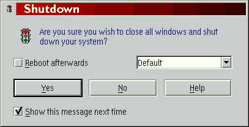
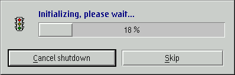

Wichtiger Hinweis: &xshutdown; ist standardm„áig deaktiviert, um Verwirrung zu vermeiden. Sie m�ssen &xshutdown; im neuen Objekt "&xwp;-Konfiguration" aktivieren.
Nachdem Sie &xshutdown; aktiviert haben, k”nnen Sie "Systemabschluá" im Kontextmen� der Arbeitsoberfl„che ausw„hlen, was nun &xwp;s Prozedur zum Systemabschluá statt &os2;s Standard-Systemabschluá ausf�hrt.
Nachdem Sie "Systemabschluá" ausgew„hlt haben, erscheint ein Dialogfenster „hnlich dem folgenden:

Die haupts„chlichen neuen M”glichkeiten von &xshutdown; sind:
Sie k”nnen sogar Ihre eigenen Neustart-Optionen erstellen, z.B.
nach dem Neustart direkt eine bestimmte Bootmanager-Partition
starten. Dies wird im Detail erkl„rt, wenn Sie den Knopf "Aktionen bei
Neustart" auf der Seite "XShutdown" im Einstellungsnotizbuch der
Arbeitsoberfl„che dr�cken.

DEVICE=X:\OS2\BOOT\DOS.SYS
wobei Sie X: mit Ihrem &os2;-Systemlaufwerk ersetzen m�ssen.
Sie k”nnen den Erweiterten Systemabschuá auf der neuen Seite "XShutdown" im Einstellungsnotizbuch der Arbeitsoberfl„che konfigurieren (und auch abschalten).
Wenn Sie daran interessiert sind, wie &xshutdown; intern funktioniert, lesen
Sie bitte die entsprechende Seite im
Kapitel "&xwp;-Interna".